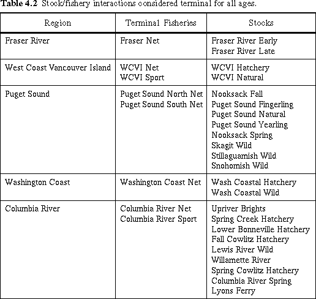
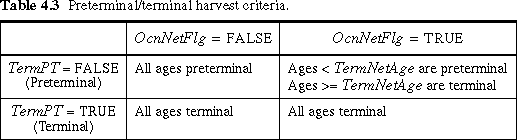

Fisheries that harvest only mature individuals from certain stocks are designated "terminal" for those stocks. For example, the Columbia River net fishery is considered terminal for all ages of all stocks of Columbia River origin. Some fisheries are terminal for some stocks and preterminal for others. For example, the Columbia River sport fishery is considered terminal for Columbia River stocks, but preterminal for the Oregon coastal stocks, which it also harvests.
On startup, the model reads in a two dimensional array of boolean characters, called TermPt(s,f) for "Terminal Pointer", to identify stock/fishery combinations for which all ages are to be considered terminal. Terminal fisheries and the stocks they harvest by geographic region are listed in Table 4.2.
All troll fisheries are considered preterminal for all ages of all stocks they harvest. Net fisheries are more complicated. Some ocean net fisheries harvest both immature and mature ages from the same stock. For example, the nearshore ocean waters where some net fisheries operate are habitat for immature ages and for mature ages returning to spawn. At startup, the model sets the age at which all harvests by net fisheries are to be considered mature. The variable is called the TermNetAge and is usually set at age four.
In summary, the model uses three variables to determine whether a stock/age/fishery harvest is preterminal or terminal: TermPt, OcnNetFlg, and TermNetAge. Table 4.3 summarizes the relationship between these variables for a given stock/fishery combination.

